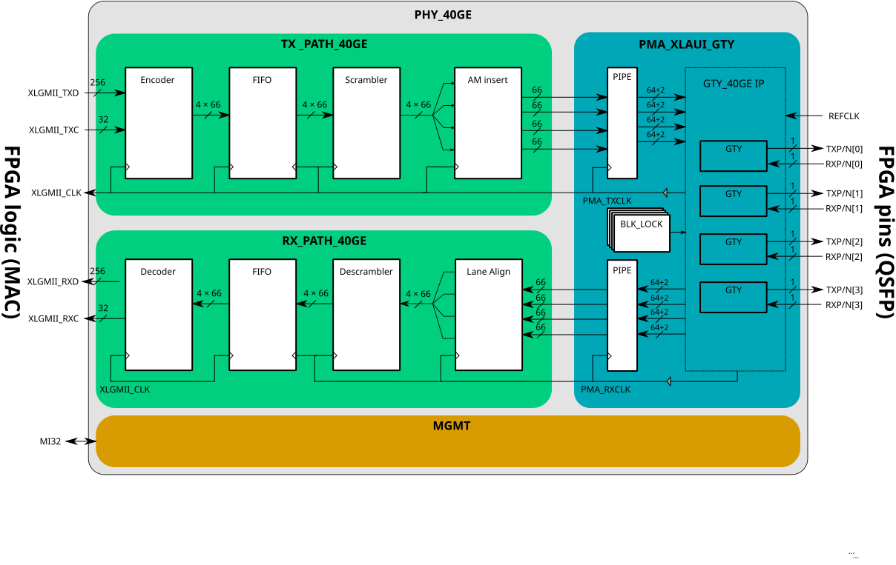

40GE Ethernet PHY for Ultrascale+ FPGAs¶
The phy_40ge component implements 40G Ethernet Physical Layers (GBASE-R PCS + PMA) according to IEEE 802.3 clauses 82 and 83, intended for Xilinx Ultrascale FPGAs with GTY transceivers forming the PMA layer. Via the serial data ports RXP TXP, it can directly connect QSFP optical or CR-type transceivers. Ethernet data are passed to/from FPGA fabric via the standard MII interface. The component also includes management registers similar to 802.3 clauses 45.2.1 (PMA/PMD registers) and 42.2.3 (PCS registers) - see Address space.
Interface¶
- ENTITY phy_40ge IS¶
- Ports
Port
Type
Mode
Description
RESET
std_logic
in
Global Async reset
CLK_STABLE
std_logic
out
XLGMII clock stable and running
=====
XLGMII interface
=====
=====
XLGMII_CLK
std_logic
out
XLGMII clock, 156.25MHz, common for both TX and RX
XLGMII_TXD
std_logic_vector(255 downto 0)
in
TX data
XLGMII_TXC
std_logic_vector(31 downto 0)
in
TX command
XLGMII_RXD
std_logic_vector(255 downto 0)
out
RX data
XLGMII_RXC
std_logic_vector(31 downto 0)
out
RX command
=====
Transceiver clocking
=====
=====
REFCLK_IN
std_logic
in
322.2 MHz clock - SLAVE mode only
REFCLK_P
std_logic
in
External GTY reference clock positive, 322.265625 MHz. MASTER mode only
REFCLK_N
std_logic
in
External GTY reference clock negative, 322.265625 MHz. MASTER mode only
REFCLK_OUT
std_logic
out
Reference clock output for clocking a slave
DRPCLK
std_logic
in
Stable free running clock, up to 125 MHz
=====
Serial transceiver ports
=====
=====
RXN
std_logic_vector(3 downto 0)
in
RXP
std_logic_vector(3 downto 0)
in
TXN
std_logic_vector(3 downto 0)
out
TXP
std_logic_vector(3 downto 0)
out
RXPOLARITY
std_logic_vector(3 downto 0)
in
Optional polarity invert (‘1’ = inverts polarity on corresponding RXP/N pins)
TXPOLARITY
std_logic_vector(3 downto 0)
in
Optional polarity invert (‘1’ = inverts polarity on corresponding TXP/N pins)
_DET
std_logic_vector(3 downto 0)
in
Optional signal detect from the external transceiver/PMD
=====
Management (MI32) - optional
=====
=====
MI_RESET
std_logic
in
MI_CLK
std_logic
in
MI_DWR
std_logic_vector(31 downto 0)
in
MI_ADDR
std_logic_vector(31 downto 0)
in
MI_RD
std_logic
in
MI_WR
std_logic
in
MI_BE
std_logic_vector( 3 downto 0)
in
MI_DRD
std_logic_vector(31 downto 0)
out
MI_ARDY
std_logic
out
MI_DRDY
std_logic
out
The XLGMII bus operation and data format are described in IEEE 802.3 section 81.2.
For management bus operation, see MI bus specification
Architecture¶
The main building blocks are the TX PCS tx_path_40ge, RX PCS rx_path_40ge, the PMA pma_xlaui_gty and the management mgmt
{kind=link}

TX PCS¶
The transmit side of the PCS layer performs functions defined in 802.3 clause 82.2: data coming from the XLGMII are encoded into 66-bit blocks, scrambled, distributed on 4 lanes, and then on each lane, the alignment marker block is periodically inserted.
The main building components are as follows:
Encoder
gbaser_encodeperforms XLGMII to GBASE-R block encoding according to 802.3 clause 82.2.3.FIFO
pcs_tx_fifo_deprecatedserves as a buffer for speed rate compensation between MAC and PMA and for dropping of IDLE blocks as a result of alignment marker insertingScrambler
scrambler_genimplements self-synchronizing scrambler defined in 802.3 section 49.2.6AM insertor
am_insinserts alignment marker blocks into the data stream to allow the receiver to deskew and reorder the lanes
RX PCS¶
The receive side of the PCS layer performs functions defined in 802.3 clause 82.2. The main building blocks are as follows:
Decoder
gbaser_decodeperforms GBASE-R block decoding and conversion to XLGMIIFIFO
pcs_rx_fifo_deprecatedserves as a buffer for speed rate compensation between MAC and PMA and for dropping of IDLE blocks as a result of alignment marker deletionDescrambler
descrambler_genimplements polynomial descrambler defined in 802.3 section 49.2.10Lane alignment
lane_alignperforms lane deskew, reorder, and deletes alignment marker blocks inserted by the transmit sideBER monitor
ber_monmonitors block headers validity and asserts hi_ber flag signaling degraded link reliability
PMA¶
The PMA’s main task is to serialize and deserialize the data stream, provide TX, and recover RX clocks. The component’s core is the Xilinx GT IP gty_40ge, configured in 4 lane mode, with a bitrate of 10.3125 Gbps each. Each lane uses an async gearbox to simplify design logic and clocking (provided clocks match XLGMII frequency of 156.25 MHz in such configuration). Moreover, the PMA includes block lock component block_lock to perform GBASE-R boundaries search on link startup, pipeline registers on the data path to simplify FPGA place & route, and logic to perform GTY reset sequence.
Management¶
The management component collects PCS and PMA statistics and makes them available to software via the MI32 bus. It also provides some control registers to allow a reset of the PMA and PCS or to turn the loopback on/off. For more details, see the MI bus specification and Address space sections.
Address space¶
Offset |
Register |
IEEE ref |
|---|---|---|
0x10000 |
PMA/PMD control 1; PMA/PMD status 1 |
1.0, 1.1 |
0x10004 |
PMA/PMD device identifier |
1.2, 1.3 |
0x10008 |
PMA/PMD speed ability; PMA/PMD devices in the package |
1.4, 1.5 |
0x1000C |
PMA/PMD devices in the package; PMA/PMD control 2 |
1.6, 1.7 |
0x10010 |
PMA/PMD status 2; PMA/PMD transmit disable |
1.8, 1.9 |
0x10014 |
PMD receive signal detect; PMA/PMD extended ability register |
1.10, 1.11 |
0x10018 |
10G-EPON PMA/PMD P2MP ability register |
1.12 |
0x30000 |
PCS control 1; PCS status 1 |
3.0, 3.1 |
0x30004 |
PCS device identifier |
3.2, 3.3 |
0x30008 |
PCS speed ability; PCS devices in the package |
3.4, 3.5 |
0x3000C |
PCS devices in the package; 10G PCS control 2 |
3.6, 3.7 |
0x30010 |
10G PCS status 2; Reserved |
3.8, 3.9 |
0x30040 |
GBASE-R and GBASE-T PCS status 1 + status 2 |
3.32, 3.33 |
0x30058 |
BER high order counter; Errored block high order counter |
3.44, 3.45 |
0x30064 |
Multi-lane BASE-R PCS block lock status |
3.50, 3.51 |
0x30068 |
Multi-lane BASE-R PCS alignment status |
3.52, 3.53 |
0x30190 |
BIP Error counter lane 0 + lane 1 |
3.200, 3.201 |
… |
… |
… |
0x301b4 |
BIP Error counter lane 19 + lane 20 |
3.218, 3.219 |
0x30320 |
PCS lane mapping registers lane 0 + lane 1 |
3.400, 3.401 |
… |
… |
… |
0x30344 |
PCS lane mapping registers lane 19 + lane 20 |
3.418, 3.419 |
All other registers are reserved - read as 0x0, write takes no effect.